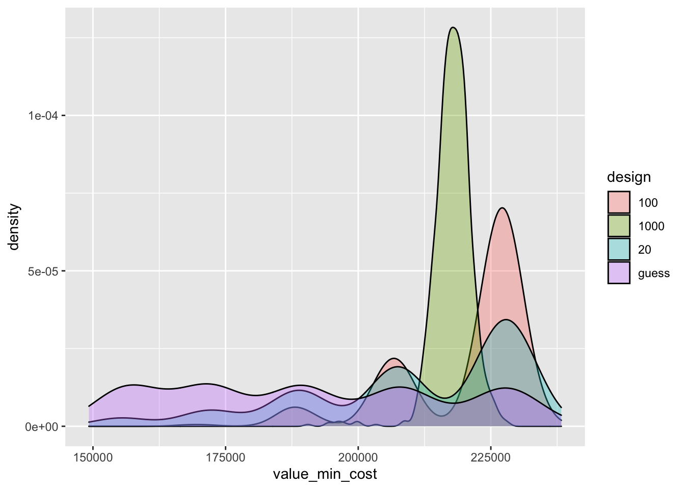

8 Quant. issues/VOI
- ‘Treatment’ assignment (blocking, randomization, etc)
- Adaptive, sequential and dynamic designs
- Planning, diagnosing and adjusting a design
- Power analyses (and other ‘diagnosands’)
Note that much ‘experiment and trial’ relevant content is covered in the surveys section. We will put in placeholders and cross-link.
8.1 ‘Treatment’ assignment (blocking, randomization, etc)
Adaptive, sequential and dynamic designs
8.2 Planning, diagnosing, adjusting a design
8.2.1 Specifying models, hypotheses, and statistical testing and inference approaches
8.3 Gains from small sample sizes in a Bayesian context
8.4 Power analyses (& other ‘diagnosands’)
Key resources and explainers
Power analysis discussion and workflow section
This is a proposal and tools for a ‘path to do’ power testing (by Jamie Elsey; David Reinstein will weigh in too). I think this first focuses on a frequentist approach, but it’s likely to also introduce a Bayesian approach.
8.5 Value of information, optimal trial design
Why VOI instead of Power?
N = 680 per cell is enough to have 95% power to detect a Cohen’s d of 0.20 … multiple comparisons. etc
The power calculation approach might implicitly assue we need \(p=0.01\) otherwise “we can’t reject the null” … which is vulnerable to being rounded up to “we can’t make any inference.”
I (Reinstein) think this the wrong way to consider it. If we think it’s even 55% likely that message A is better than message B, we should choose message A. We have learned something.4
Reframing the discussion:
… Not “how many observations do we need for this to be useful at all” we should be thinking/considering
.. Instead “even small amounts of data permit useful learning”… so “how much data should we collect until it is no longer worth the cost … to maximize our net gain from better decisionmaking?”5
This is a VOI calculation.
VOI and Optimal Design and inference: framework
For a decision-maker (‘DM’), knowing one condition is (e.g.) 80% likely to perform better than another may be very valuable. Still, the benefit of this depends on:
How does the ‘better’ metric (e.g., mean of Likert measures) translate into proximate and ultimate outcomes? 6
‘How much better is better?’; e.g., what is the expected gain in the ultimate outcome, incorporating the costs of being ‘wrong in either direction’?
How much is the ultimate outcome valued?7
Ultimately, we want to choose our design and analysis strategy to maximize the “Value of Information” (VOI), minus the cost of acquiring this information. Call this strategy (\(\Sigma\))8 and the information set at the end of the trial be \(\Theta(\Sigma)\)9. This VOI is essentially the difference between: 10
- \(V_1(\Sigma) \equiv E\Big[V\big(\mathbf{\Phi}|D(\Theta(\Sigma)\big)\Big]\)
The expected value of the outcomes \(\mathbf{\Phi}\) according to the DM’s criteria11, given the decisions \(D\) that will be made, in light of the information \(\Theta\) gained from trials that use design \(\Sigma\).
- \(V_0 \equiv E[V(\mathbf{\Phi}|D(\Theta_0))]\)
The ‘value of the outcomes…’ given decisions made without any further information, i.e., with the information set \(\Theta_0\) that we will have in the absence of the trial.
Hence the VOI is:12
\[V(\Sigma) = V_1 - V_0\]
Thus we want to choose our design \(\Sigma\) to maximize the VOI net of the costs of running the design (\(C(\Sigma)\)):
\[\Pi(\Sigma) := V_1(\Sigma) - V_0 - C(\Sigma).\]
Of course, the design does not affect \(V_0\), so we only need to worry about finding the design \(\Sigma\) that achieves the highest value of:
\[V_1(\Sigma) - C(\Sigma) = E\Big[V\big(\mathbf{\Phi}|D(\Theta(\Sigma)\big)\Big] - C(\Sigma).\]
Operationalizing this
We need to come up with explicit measures of:13
- The specific design choices we are considering, i.e., some subset of \(\Sigma\).
(E.g., ‘how many conditions, which conditions, and how many individuals assigned to each condition’.)
- The information we can gain from the trials, making inferences from an observed vector \(\mathbf{Y}\), e.g.,
- \(s_j \in [0,10]\) the survey mean of our ‘interest in the DM’s organization’ questions among Prolific participants, for each of conditions \(j \in t_0, t_1, ..., t_k\), and,
- \(c_j \in [0,1]\) the ‘share that click on the organization’s web link’ …
- The joint (prior) distribution over the information we can observe and the real-world outcomes/rates we are interested in, \(F(\mathbf{Y}, \mathbf{\Phi})\). More simply, some quantification of ‘how can we make inferences about the real world outcomes given what we will observe in the study?’
E.g.,
we expect the real world conversion rate for a condition14 to be distributed with a Beta distribution centered at the mean of a weighted function of the true ‘Prolific click rate’ in that condition and the true average ‘interest in the organization score’, multiplied by some scaling factor.
The (relative) value of the world under each specific outcome. E.g., the dollar value the DM puts on some real-world conversion rate \(\phi\)15
The cost of our possible design decisions. E.g., the cost per additional participant.
Next: If we can fill in some of this, we may be able to make considered but heroic assumptions over the rest, and generate a VOI measure as a function of our design choices.16
Most of the gains from this will not be specific to this particular trial but will come in helping us developing an approach to later work for this partner and others.
8.5.1 Building a tangible approach to VOI
A specific proposal for comparing the VOI of designs
Essentially17
- Set (and carefully consider) a reasonable prior distribution over the ‘message performance in the real world’18… across a range/random draw of possible messages (say, \(M\) total messages, indexed by \(m\)).
E.g., let the individual probability of signup have a Beta distribution with a mean \(u_m\) for message \(m\). Assume these means \(u_m\) are drawn from a multivariate normal distribution.
Make heroic assumptions over the connection between the observed metric19 and the true outcome (example above).20
-
Simulate the distribution of value for each design we are considering \(k \in K\)21. For each design \(k\), for each simulation \(t\), we will do the following.
-
Simulate ‘what we report to the client’:
Draw the parameters of the ‘true value’ of performance (of each message) from the prior (call it \(\Phi_t\) for sim \(t\), perhaps a vector of length \(M\)). Given these parameters…
Consider a ‘Sample population’ \(N(k)\) equal to the size as specified in design \(k\). Simulate assigning each of \(N(k)\) individuals (indexed by \(i\)) to a ‘message treatment \(m=m_i\)’, with this assignment following design \(k\).
Draw ‘real outcomes for each sample individual \(i\)’, if they were to be assigned to message \(m_i\) in the real world, i.e., \(Y_i(m_i)\),[^exp_design_quant-5]
Draw the ‘survey metric’ \(s_{im} = Y_{im} + error\)22 for each individual, were they to be assigned to message treatment \(m_i\). Let the latter vector for all individuals in the simulated sample \(t\) be \(S_t(\Phi_t))\).
Estimate \(\beta(S_t)\), the ‘metric we would report to the client’ as a function of the above vector \(S_t(I_t))\). This could be something simple, like a rank-ordering of the mean values of the Likert measure for each treatment.
Calculate the ‘client’s message choice’ given this information. For simplicity (for now), assume the client optimizes in some way. E.g., assume they assign all real-world people to the one treatment that performed best by our reported metric \(\beta(\Phi_t)\)), Call this message choice \(m^{*}_t\).
-
Estimate the value achieved by this choice:
Let \(W\) be the number of people affected23. Draw \(W\) individuals from the simulated population, still using parameters \(\Phi_t\) for these draws
Imagine each of these are assigned message \(m^{*}_t\).24 Draw ‘simulated real outcomes’ for each of these individuals for this message. I.e., \(Y_{i}(m^{*}_t)\).
Report the total value achieved (most simply \(W \times y_{i}(m^{*}_t)\)) and call this value \(V_t(k)\): the “value achieved in simulation \(t\) under design \(k\).”
-
Do this simulation for each design choice \(k\), and report the distribution of value \(V_t(k)\). We can then do this simulation for each of a range of relevant design choices \(k\) 25 to compare performance.26
Coded: Simple example of the VOI simulation
We next code and present a “bare bones example”
In this case I imagine having to choose between 5 messages with different (unknown) efficacy. You can just guess which is best, or field the messages to 20, 100, or 1000 people each. Then as the decision criteria you just suggest picking the one with the best mean.
Suppose this costs 2 USD per participant
Then I imagine some conversion from their scores to their likelihood of signing up to something, and I say the value of a sign up is $40 (this could be changed, or estimated for various values in principle). 27
Then I imagine the messages are ‘for real’ going to be fielded to 200,000 people - and I simulate them being fielded for each item at the ratio those items were [chosen as best in our simulations] based on each design.
- Message performance in real-world (or trial) drawn from a distribution, design randomly chooses some number of messages to test
- Draw from (prior distribution of beliefs over) the variance between message performance
- … and over the connection between message performance in trial and real world
Coding this
Code
.options = furrr_options()
plan(multisession)We create a function simulate_and_infer, following the description above, to:
- Simulate responses
- As standard normal draws
- Each message performing a bit differently on average, with ordering \(e > d > a> c > b\) 30
- Differences of (Cohen’s d) 0.1 between each message, with a maximal difference of 0.4.31
- Tell you which ‘group’ (e.g., which of 5 messages ‘a’ through ‘e’) would be chosen by the client (assuming they simply pick the one with the highest mean response in the trial data)
The dataframe32 generated has one row per simulation, keeping only a counter for the simulation, the design sample size, and the ‘chosen as best-performing’ message.
Code
simulate_and_infer <- function(n, sim, dscale=1) { #note the key parameter 'n', the number of sample draws, i.e., number participants in the experiment for this design
# simulate 5 groups
sim_data <- tibble(group = c(rep("a", n),
rep("b", n),
rep("c", n),
rep("d", n),
rep("e", n)),
response = dscale*c(
rnorm(n, 0, 1),
rnorm(n, -.2, 1),
rnorm(n, -.1, 1),
rnorm(n, .1, 1),
rnorm(n, .2, 1)),
nsim = sim)
# estimate the mean per group
decision <- sim_data %>%
group_by(group) %>%
summarise(mean = mean(response))
# in this case our inference is simply to pick the one with the highest mean
output <- tibble(selected = decision$group[which(decision$mean == max(decision$mean))],
sim = sim,
n_per_group = n)
return(output)
}Next we set some options and parameters for the simulation. Here, we consider three possible designs, with either:
- 20 participants per group,
- 100 per group,
- or 1000 per group.
We generate the tibble from this simulation in the code below.
Code
twenty_hundred_thousand <- furrr::future_map2_dfr(
.x = c(
rep(20, 1000),
rep(100, 1000),
rep(1000, 1000)), #sample size in each simulation
.y = 1:3000, #number of simulations
.f = simulate_and_infer,
.options = furrr::furrr_options(seed = 1234)
)Reporting the results:
Code
Above, we see that the larger the trial sample size, the more often the best message is chosen. Note that with the 20-observation trials, even the worst message (b) is sometimes chosen. With the 1000-observation trials the best message (e) is chosen nearly all the time in our simulations, with only an occasional choice of the second-best message (d).
But what is the value of each design?
Next, we need to model the connection between the trial outcome (e.g., Likert scores) and real-world outcomes (e.g., signing up for coaching, aka ‘conversion’).33 As discussed, we assume that the outcomes in the trial are consistently positively related to the probability of the real-world outcomes.34
We set up a function below (score_to_conversion) to calculate the value (and cost) from a particular ‘trial design35 that recommends a particular message’…
… which will be applied to a population of some exposure_size, yielding some number of conversions, each with some conversion_value.
It also considers/allows setting:
the baseline average conversion probability
conv_probthe cost per-trial-participant (
cost_per_ppn)some number of simulations36
a scaling factor for differences between designs (
dscale)a scaling factor for the connection between the trial response and the real world outcome (
connection)37
Code
score_to_conversion <-
function(group = "a", design = "guess", sim = 1, exposure_size = 200000, conversion_value = 40, cost_per_ppn = 2, conv_prob = 0.015, dscale=1, connection=1) {
average_score <-
if (group == "a") { 0 }
else if (group == "b") { -.2*dscale }
else if (group == "c") { -.1*dscale }
else if (group == "d") { .1*dscale }
else if (group == "e") { .2*dscale }
#DR: shouldn't this be able to be automatically same object that we put into the `simulate_and_infer` function... so we only need to adjust one thing as we do sensitivity checking?
respondents <- tibble(
individual_scores = rnorm(n = exposure_size,
mean = average_score),
individual_probability = conv_prob * (1 + (1 * individual_scores))) %>% #DR: I adjusted how these were assigned because Jamie's version was throwing an error for me `Error in eval_tidy(xs[[j]], mask) : object 'individual_scores' not found`. Probably needs doublechecking
mutate(individual_probability =
plogis(
qlogis(conv_prob)
+ connection * individual_scores
)
) %>%
#DR: Conceptually, I think it makes more sense to me to go the other way. First generate the true probability, and then make the scores a function of that. But perhaps it doesn't matter.
mutate(
conversion = rbinom(n(), 1, individual_probability)
)
outcomes <- summarise(
respondents,
total_conversions = sum(conversion)) %>%
mutate(
value_conversions = total_conversions * conversion_value,
exposure_size = exposure_size,
design = design,
sim = sim
) %>%
mutate(
cost = case_when(
design == "guess" ~ 0,
design != 0 ~ as.numeric(design) * 5 * cost_per_ppn
), #here, 5 treatments .. and "design" simply specifies the sample size per treatment
value_min_cost = value_conversions - cost
)
return(outcomes)
}Now we can make a distribution of value for each design when the recommended message is ‘fielded’ in the real world. We start with the simulation default of a message fielded to 200,000 real people. We consider each of the three sample-size designs from before (20, 100, 1000) as well as a simple ‘guess’ based on no trials at all. We estimate the expected value from each design. Again, we imagine that messages are used when they come out ‘best’ in a trial. To get the expected value, for each design, we weight this by the simulated probability that a message ‘comes out best’.
Code
value_for_messages <- pmap_dfr(.l = list(group = c(twenty_hundred_thousand$selected, c(rep("a", 200),
rep("b", 200),
rep("c", 200),
rep("d", 200),
rep("e", 200))),
design = c(twenty_hundred_thousand$n_per_group, rep("guess", 1000)),
sim = c(twenty_hundred_thousand$sim, 3001:4000)),
.f = score_to_conversion)
#Note -- the above takes a few minutes, and throws a lot of warnings 'cost = case_when(...)`. NAs introduced by coercion'`Next, we plot the ‘gross’ expected value achieved as a result of each design (not considering costs):
Code
| design | mean | lower | upper |
|---|---|---|---|
| 100 | 221,189 | 191,672 | 232,402 |
| 1000 | 227,767 | 222,760 | 232,800 |
| 20 | 210,261 | 169,990 | 231,800 |
| guess | 190,780 | 154,640 | 229,844 |
Code
ggplot(value_for_messages) +
geom_density(aes(x = value_conversions, fill = design), alpha = .33)Above, we see that the 1000-observation design yields the highest (gross) value. This must be the case: barring extremely weird draws, a larger sample will more closely resemble the true population distribution. Thus, if the trial measure is informative, the more ‘profitable’ message will be chosen more often. However, this benefit might not outweigh the cost of a larger trial sample; we this consider the ‘net’ value below.
Code

Code
| design | mean | sd | mad | lower | upper |
|---|---|---|---|---|---|
| 100 | 220,189 | 12,390 | 10,010 | 190,672 | 231,402 |
| 1000 | 217,767 | 3,705 | 2,574 | 212,760 | 222,800 |
| 20 | 210,061 | 20,918 | 17,229 | 169,790 | 231,600 |
| guess | 190,780 | 25,471 | 21,929 | 154,640 | 229,844 |
As the graph and table above suggest, the largest (1000-observation) sample design yields a lower payoff in expected value (but substantially less dispersion).
Just a brief here, this will be covered in more detail in the sections on statistical inference, testing, and analysis↩︎
Private RP Gdoc. May be worth bringing this code in here.↩︎
Note: this will very much overlap the discussion of power analysis for surveys. Perhaps we put the simpler introduction there, and the more involved details here?↩︎
But of course it’s better if we can use a procedure that has a lower rates of false positive. Why? Because if we do what I just said, we are choosing the wrong message 45% of the time, so our net gain is lower … maybe only a net gain of something like ‘choosing the better message an additional 10% of the time’.↩︎
I’m saying this in the context of real-world decision problems, not necessarily considering scientific studies or studies trying to establish general truths and convince skeptical audiences of surprising results.)↩︎
E.g., signing up for EA coaching/changing jobs for greater impact, respectively↩︎
E.g., the value of a positive career change.↩︎
a vector or matrix↩︎
It will also a function of a random term.↩︎
incorporating some Greek letters to make it look fancy↩︎
E.g., the ‘client’ EA organization, and perhaps other stakeholders↩︎
Note this term is also an expectation, but using expectations operators everywhere gets cumbersome; we may bring these (integrals) back again where we need to do explicit calculations.↩︎
So far, this is all just defining terms, and potentially obvious. We need to start operationalizing this.↩︎
where ‘conversion’ means “a YouTube viewer clicks on the ad and signs up for coaching”↩︎
This should also take into account how long the ads informed by this trial are going to run for and other factors.↩︎
This would probably benefit from multiple quasi-independent takes and some benchmarks against ‘outside views’. We probably want to look to existing models and approaches for guidance. And we may want to substitute reasonable proxy measures for things of ultimate interest.↩︎
Reinstein: This may be reinventing a wheel I’m not familiar with.↩︎
E.g., ‘the probability a random person drawn from the real-world audience signs up for coaching after seeing the real world version of a message.’↩︎
E.g., the average Likert score on Prolific↩︎
Making an assumption about this connection is challenging, with a lot of possible reasoning paths. Perhaps a joint distribution, or perhaps something simpler like a proportional relationship with an error term (if a message’s Likert result is 10% better it will perform 10% better in the real world +/- some independent error term.)↩︎
Or \(\Sigma_k\) to be consistent with the previous notation.↩︎
E.g., mean Likert scores↩︎
E.g., the number the client wants to serve the ads to↩︎
… According to the above ‘client’s choice procedure given our reporting’↩︎
including sample sizes, how many messages, number assigned to each message, etc↩︎
We can also test the sensitivity to different priors, different metrics reported to clients, client decision rules, etc.↩︎
DR note: I very slightly reworded Jamie’s language above, for clarity↩︎
DR: In our present context (which I won’t discuss here) I think the clients would say the value of actually signing up is much higher … but 40 dollars for a ‘real world click on their site coming from these ads’ might be in the right range.↩︎
DR: I’m pretty sure he means ‘at the rate that these were chosen as the best message by our simulations of an experiment’, not at the rate the individuals choose these messages. This is consistent with assuming ‘the client chooses to exclusively use the message we deem best after our trial’.↩︎
‘a’ is set to be in the middle, perhaps the ‘control group’.↩︎
DR: I added a scaling factor for this:
dscale↩︎A ‘tibble’↩︎
Jamie: “I will pick a single conversion value, but we could (should?..) make it a distribution”. DR: I agree that it would be good to embody our uncertainty over this. Not sure whether we should do it by making it a single distribution entering into our simulation, or through sensitivity testing (or both).↩︎
This could probably be more formally defined.↩︎
here just the sample size
design, or a pure guess↩︎DR: I guess this doesn’t make much difference at the moment.↩︎
DR: I’m not sure I’ve done this correctly. This might be scaling both this connection and the real-world differences between the treatments. We should discuss this.↩︎